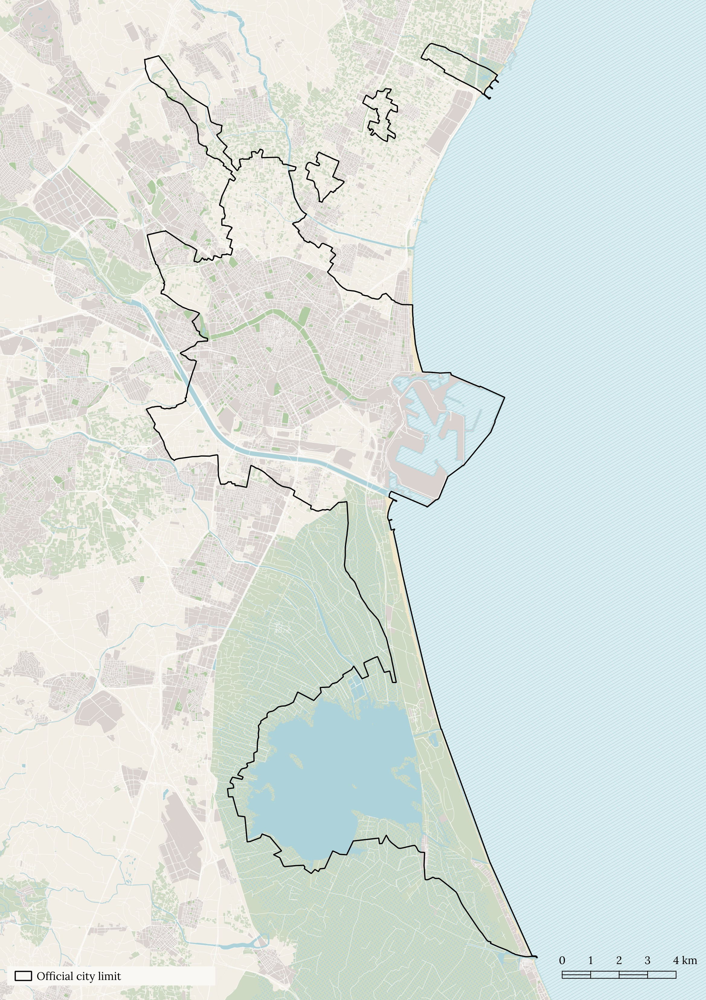
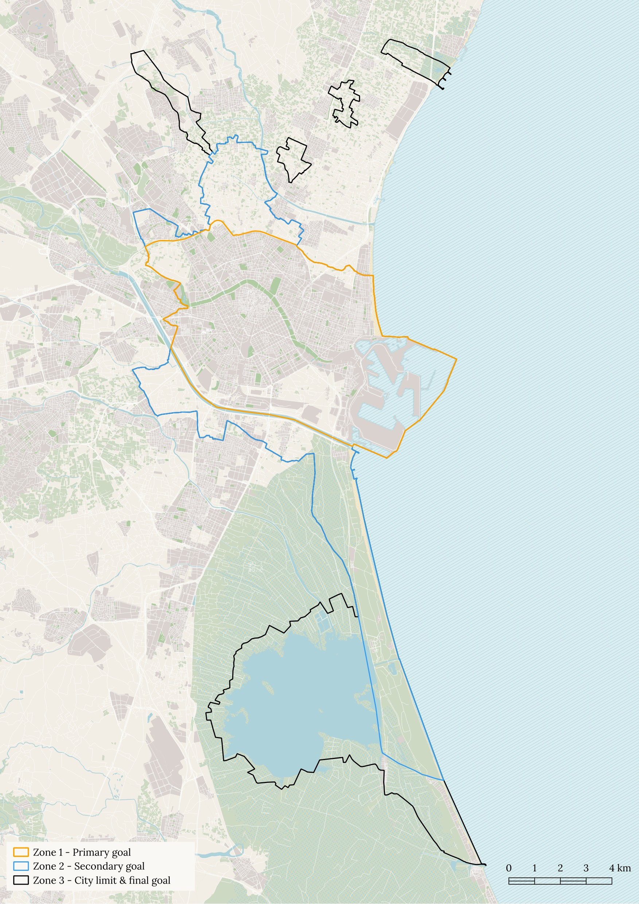

Life, the universe, and everything
There are many things that I didn’t expect at the start of this journey. I didn’t expect that trying to build a map would get me a job, I didn’t expect to spend so much time wondering what counts as a “street,” and I certainly didn’t expect to end up with a long list of side quests, extensions, and project ideas that will keep me busy for a long time.
But here I am, about to bring you behind the scenes to a place full of improbable questions that hang there in the air, much in the same way that bricks don’t, and come crashing down in the manner of a rather surprised-looking whale.
What’s “Valencia”?
At first, I just wanted to walk, so that’s what I did, but after the first 100 km or so, some questions became unavoidable. For example, where does Valencia start? Where does it end? What even is “Valencia”?. I looked at official maps, and the result was… "interesting".

The official city boundary goes well beyond what most people would consider Valencia and includes a series of (seemingly random) fields, beaches, and wetlands far from town. This gave rise to two pragmatic decisions. The first was to split the project into three phases:
- Zone 1, the primary goal, covering what most locals would think of when talking about Valencia
- Zone 2, the secondary, including most of the areas that are connected to the primary
- Zone 3, the final goal, including everything that falls within the official city limit
The second was to allow myself to walk any part of them at any time.

What’s a “street”?
Having established what “Valencia” was, the next part of the “walk every street in Valencia” problem was figuring out what counts as a “street”. At first I tried to solve this using established categories like the ones on OpenStreetMap, but they didn’t fit the way I wanted to walk the city, so I built my own decision tree.
This had the unexpected advantage of allowing me to decide what elements of the city became part of each stage of the challenge… and expand beyond streets to include everything that I wanted to explore. With that in mind, the next question was:
Where can I walk?
The decision tree starts with some simple questions:
Can this place be accessed on foot?
- No = Exclude
- Yes = Continue evaluation
Is the place safe to walk?
- No = Exclude
- Yes = Continue evaluation
Then it adds something less obvious but important:
Is it normal to walk through it without being challenged or attracting attention?
- No = Exclude
- Yes = Continue evaluation
The latter was added because, as I walked, I started to come across many places that, while technically public, were not being perceived as such, like a road leading to a single private house.
I also chose to exclude:
- Religious spaces (such as cemeteries and sanctuaries) because it felt inappropriate to walk there in the way this challenge would require
- Spaces designed primarily for cars or for industrial use (car parks, gas stations, tunnels, highways, entry/exit ramps, industrial areas, deposits, etc.) since they were unsafe to walk
- Indoor spaces, even if publicly accessible, as they did not fit the spirit of the challenge. This also includes partially open areas like shopping centers and transport infrastructure such as metro stations and bus terminals
What to do with parks?
The next thing I walked into was a park. Valencia is full of them, they come in all shapes and sizes and have many small paths that go in every direction. My first instinct was to walk all of them, immediately, but reason prevailed, and this came out:
Does the area look or feel like a park?
- No = Continue evaluation
- Yes = Split by project phase
There are 3 project phases, one for each of the zones described earlier. Each phase increases the area where all “streets” need to be walked but also adds more things to be walked in the core project area (Zone 1). In the case of parks, the phase split is as follows:
- Primary phase: Walk the outer perimeter. Surrounding streets count as part of the perimeter. If there are no streets surrounding it, use the closest path inside the park.
- Secondary phase: Walk the widest paths only. For especially wide paths that might need to be walked on both sides, use the same rules described in the streets section.
- Tertiary phase: Walk every path mapped on OSM (if it exists in real life).
Are squares always square?
Much like with parks, most people know a square when they see one. It is usually a flat, open space that can be accessed on foot and often features paths, plants, and amenities. Walking the city, I found plenty of them, but I also started to notice similar spaces that ran parallel to streets and were less “square-shaped”.
These spaces are often relatively narrow and long and, despite having a similar function, are not considered squares. In Valencia, the “Paseo Marítimo” is a good example. It sits between the beach and the city and has the same features that are normally found in a square, just in a “longer” format.
A similar thing happens in areas that sit next to, or in between, large roads like Ronda Norte or Blasco Ibañez, where there are large spaces with greenery and paths sandwiched between lanes of traffic. For these situations, the decision tree offers the following advice:
Does the space look or function like a square?
- Yes = Treat it like a park
- No = Continue evaluation
The next question follows a similar logic:
Are universities squares?
Short answer: not quite, but they are not too far off from parks. The challenge here is access. Valencia has many areas that are technically private or have restricted access but are de facto accessible and form part of the city.
The main example is the university campuses in the Tarongers area, where fences, gates, and guards theoretically restrict access but where it’s possible to walk unchallenged during opening hours.
These areas tend to have a high density of small paths and passages plus a few main roads, or thoroughfares, creating a structure similar to that of parks. Therefore, the decision tree states:
Is the space similar in structure and access to a park?
- Yes = Treat it like a park
- No = Continue evaluation
Can you walk a beach?
Beaches are essential to life, or at least to my life, so they were one of the first edge cases I looked at, and one of the simplest. The key is in the name “edge”, since there are no paths, all I can do is walk the perimeter. Therefore:
Are you looking at a beach?
- Yes = walk the perimeter, i.e., the shore and the closest street, road, or path on the remaining sides
- No = Continue evaluation
NOTE: Ports are generally treated as beaches, walking the shoreline and perimeter, except when the area being looked at functions more like a square or park.
Can we finally talk about streets?
Yes, ok. At this point, only streets and street-like things should be left, and the tree offers the following advice:
Does it look like a street, road, path, or other feature that people normally use to walk from one place to another?
- Yes = Continue evaluation
- No = Exclude (why are you even looking at it?!)
Does it have a barrier down the middle that limits visibility or more than 5 lanes of traffic*?
- Yes = walk both sides
- No = walk one side only
*Notes on width:
- For pedestrian areas: use an equivalent width. If you think that more than 5 cars could go through side by side with normal traffic separation, walk both sides
- For streets used by cars, ignore parked cars, count only lanes of traffic. Lanes for trams, taxis, or buses count as one lane of traffic each
What about temporary obstacles?
On a final note, there can be areas that are usually accessible but can’t be walked due to a temporary obstacle such as construction work, events, floods, etc. In these cases, the obstacle and the date are noted on the map, and if it is removed by the time all other streets in that zone have been walked, the phase can be considered complete.
Congratulations on making it to the end. If you want, you can go back to the home page, open the latest map, or take a well-deserved nap.